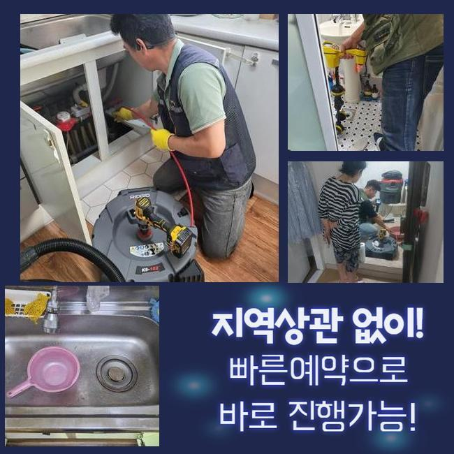
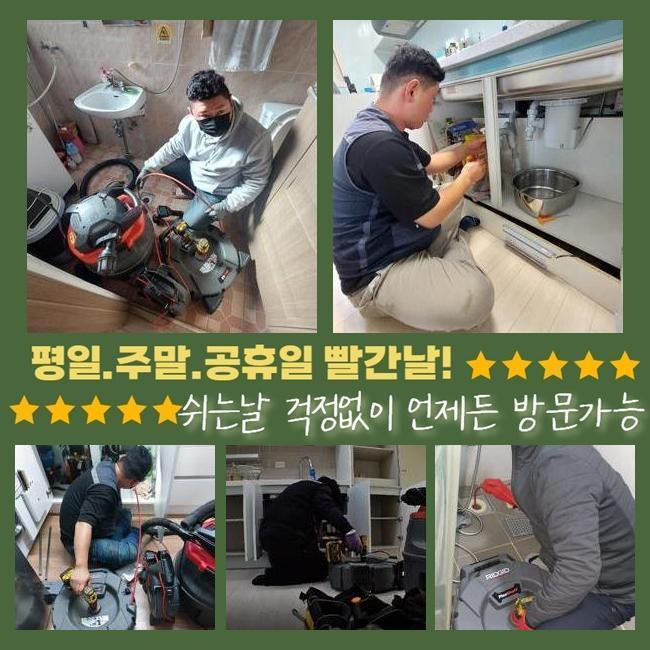
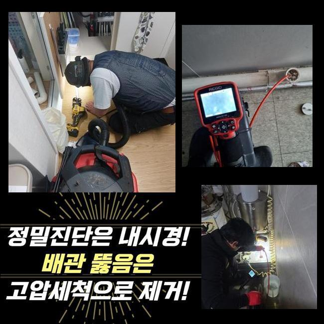
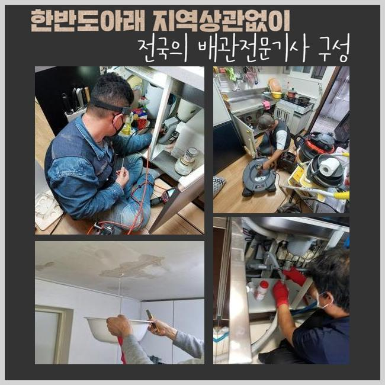
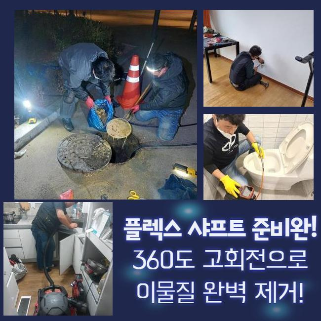
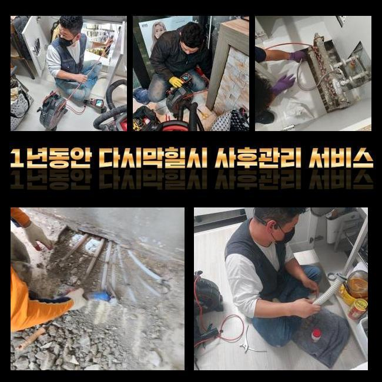
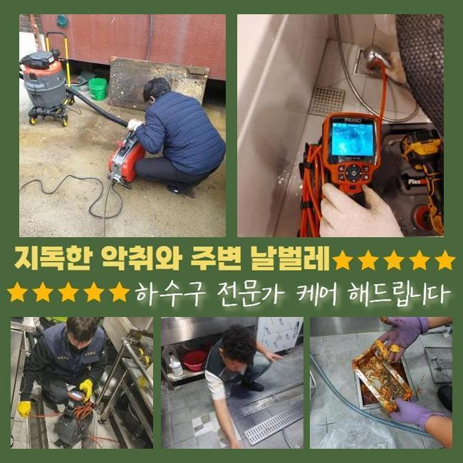

🏠 문원동화장실하수구역류 중앙동 맨홀역류 누수탐지공사
용인 원동 하수구막힘 전문 시공 후기

📋 작업 개요
- 위치: 용인 원동, 원동, 용인
- 서비스 유형: 하수구막힘, 배관막힘, 맨홀막힘, 집수정막힘, 누수수리, 역류해결, 뚫는업체, 배관청소, 고압세척, 설비공사
- 작업 일시: 2024. 10. 8. 13:53
- 업체명: 하수구수사대 (010-5615-2118)
🔍 문제 상황
문원동화장실하수구역류 중앙동 맨홀역류 누수탐지공사
주중과 주말 언제나 하수관막힘이 발견되면 신속히 찾아가 구체적인 요인 파악 후 빠르게 대응해드리는 전문가입니다
오늘 볼 사례의 고객님이 문의주신 건은 다세대 주택에서 주차공간으로 하수가 역류하여 빠르게 방문 드렸습니다
주차공간에서 물이 올라오면 그 공간에 세워진 차량들에 피해가 확대 될 여지가 있어서 최대한 신속히 의뢰현장에 내방하였습니다
현장에 도착해보니 의뢰를 요청하신 고객님께서는 하수관로막힘 지점을 지목하며 예전에는 이렇게 심하지는 않았다고 의아한 표정을 보이셨습니다
불현듯 배수구 역류문제가 발생해 악취가 몹시 강하게 퍼지고 있었습니다
의뢰장소를 직접 지켜보다 보니 주차시설 바닥으로 점차 기름물이 번져나가기 시작했어요
다세대 주택의 하수관막힘의 경우 거주하고 있는 사람들이 이용중인 갖가지 가정용 하수가 이유인 경우가 많아 지독한 냄새도 강할 수 밖에 없어요
특히 비가 올 때는 악취 피해가 주변 이웃 가구들까지 퍼지게 됩니다

🔎 원인 분석
💡 전문가 진단: 정밀 진단 장비를 사용하여 슬러지의 고착 여부를 판명하고 타격/세척 작업을 실시했습니다.
다량의 비는 하수관의 물 빠짐을 저지하여 역류상황을 더 많이 발생하게 하며 고약한 냄새를 더더욱 악화시킵니다
이 때문에 주민들은 창을 열어 공기 순환을 할 수 없게 되어 실내 공기 상태가 좋지 않게 됩니다
이와같은 문제를 방지하려면 지속적인 배수관 확인과 클리닝이 필요해요
따라서 무엇보다 전문적인 능력과 기기를 활용하여 빠르고 올바르게 처리할 수 있는 전문팀이 필요해요
물이 넘처나오는 지점을 보니 큰 슬러지 덩이가 배수관 출수구쪽을 막고 있는 것이 분명해 보였어요
육안으로 확인되는 곳은 비교적 쉽게 조치할 수 있으나 육안으로 볼 수 없는 하수구 안은 고성능 기기와 배관전문업체의 테크닉으로 처리를 해야해요
막힘문제를 당장 처리하겠다고 장치를 투입하며 함부로 나서면 안되고 정확한 이유를 분석하는 것이 핵심입니다
우선 빌라 아래의 주차구역에 있는 차를 먼저 긴급하게 다른 주차장으로 옮겨달라 부탁했습니다
주 배수관이 막히게 되면 이와같이 주차구역으로 물이 넘쳐나오며 주차해 놓은 차들까지 위험해질 수 있는 상태가 될 수 있습니다
맨 아래층에서 배수관을 이용하거나 상층에서 쓸 때도 같은 일이 생기고 있습니다

🔧 작업 과정
동시에 여러곳에서 이용하신다면 상당한 양의 물이 배출됩니다
최초 고압 물세척은 끝냈습니다
주차장 쪽의 배수구배관은 클리닝이 된 상황인데도 조금 떨어져 있는 집수정에서는 배수가 되지 않고 멈춰있습니다
또 다시 고압 물세척을 시행해야하는 상태로 진단했어요
맨홀 내부에는 여러개의 공용 배수로가 설치된 상태입니다 여기서 하수관을 확인하여 고압온수세척 시행을 해야하죠
전문팀은 어느 배수로가 중심 하수관인지 쉽게 파악할 수 있습니다
한번 더 고압수 클리닝을 실행했습니다 위층에서 확인한 황색 물이 흘러나오고 있어요
하수관로막힘 대체적인 사유는 하수파이프로 유입된 기름성분과 불순물로 막혀버리는데 이 방법은 고압 물세척 장비로 높은 수압을 이용해서 배수구 내부를 완벽하게 세척하는 것입니다
고압 물세척 시공을 하면 배수관 속 안에 밀착된 찌꺼기가 완전히 바깥으로 다 배출되면서 배수로 안은 새것 같은 배수관 처럼 깨끗합니다
고압수 클리닝 과정을 수행하면 노란 기름 뭉텅이가 밖으로 밀려 나오는 통쾌한 상태를 눈으로 직접 볼 수 있어요
황색 덩어리가 몽땅 굳은 기름입니다 이 굳은 기름 덩이들이 하수도 속 안을 가득 메우게 되고 결국 하수가 올라오게 됩니다
또 다시 배수관 맨홀안에서 고압수 클리닝을 시행하고 나니 맨홀 내부에 있던 기름 뭉텅이도 고압수에 의해 사라지는 중입니다
이렇게 다세대 주택의 중심 하수관 고압세정작업을 마무리했습니다
하수가 역류하던 상황이 확실하게 사라진 상태입니다 끝으로 시공현장을 깔끔하게 청소하는 절차가 남아 있습니다
하수관로막힘이 해결 뒤에 작업지를 완벽하게 정돈하는 것까지가 작업에 포함되어 있습니다
주차구역에서 맨홀 지점까지 거리30미터쯤 되는데요 주차장소에서 도로 근처를 고압수로 청소를 한 차례 실시 후 끝마칩니다


✅ 작업 완료
최종적으로 하수관 세척이 잘 이루어져 있는지 하수관 내시경 카메라 장치로 확인을 실시합니다
저희 전문팀이 작업을 완료할 때 매우 중요하게 생각하는 사항입니다
전문적인 기사의 예리한 시선과 고성능 기기 그리고 전문적 역량 이 세가지 요소가 잘 어우러져야 배수관막힘을 대응하는 실력인데 마지막 배수관 내시경 카메라 장치로 꼼꼼하게 배관이 뚫렸는지 검토하는 것이 핵심이므로 필히 전문 장치를 갖춘 전문기사를 결정하길 권장합니다
우리 업체로 연락주신다면 항상 친절한 안내와 지원 약속드릴게요




⚠️ 베란다 누수 및 방수 관리 방법
- ✅ 비가 많이 올 때 창틀 주변이나 아래층 천장에 얼룩이 생기는지 정기적으로 확인해 보세요.
- ✅ 우수관 주변 실리콘 마감이 들뜨거나 깨진 틈새가 있는지 손상 여부를 수시로 체크하세요.
- ✅ 베란다 바닥 타일의 줄눈(메지)이 소실되면 그 틈으로 물이 침투하여 누수가 유발됩니다.
- ✅ 누수 의심 증상 발견 시 방치하면 아래층 손실이 커지므로 즉시 전문가의 진단을 받으십시오.
💡 핵심 정리
- 확실한 장비 작업(내시경 점검 및 샤프트 스케일링)으로 원인을 뿌리 뽑습니다.
- 작업 후 1년 이내에 동일한 부위 재발 시 100% 무상 A/S 서비스를 보장합니다.
- 서울 · 경기 · 인천 전 지역에 24시간 언제든 긴급 출동할 수 있도록 항시 대기 중입니다.
❓ 자주 묻는 질문 (FAQ)
🚨 용인 원동 하수구막힘 문제로 고민이신가요?
정확한 원인 진단과 확실한 시공으로 재발 없는 해결을 약속드립니다.
24시간 긴급 출동 | 서울 · 경기 · 인천 전지역 | 1년 내 재발 시 무상 A/S